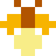

Every loop is a lantern.
The caves have gone dark, and the creatures that live there like it that way. You are a moth with a light. Fly a loop of glowing trail around a creature and it wraps into a cocoon, then wakes as a firefly. Catch it and the cave brightens. Bring a friend: two moths can close one loop together, and a fallen moth waits as a spirit for the other to bring it back.


- 15 stages through the caves, 3 bosses
- 6 creatures, each caught a different way
- 2-player co-op with team loops
- Light reveals the cave as you fly
- Power-ups: speed, control, longer trails
- Time carries over: fast clears pay off



1-2
players
players
© 2026 Tony Mamacos. An NROM-256 cartridge for NES-compatible consoles and emulators.
Independent homebrew, not affiliated with or endorsed by Nintendo.